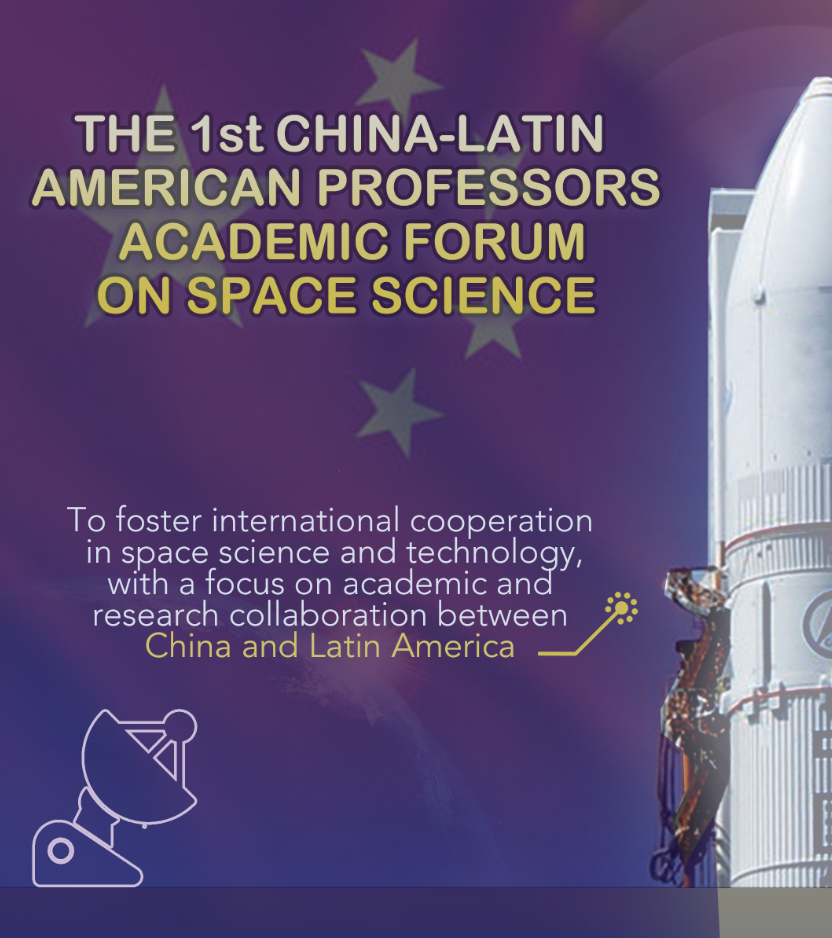
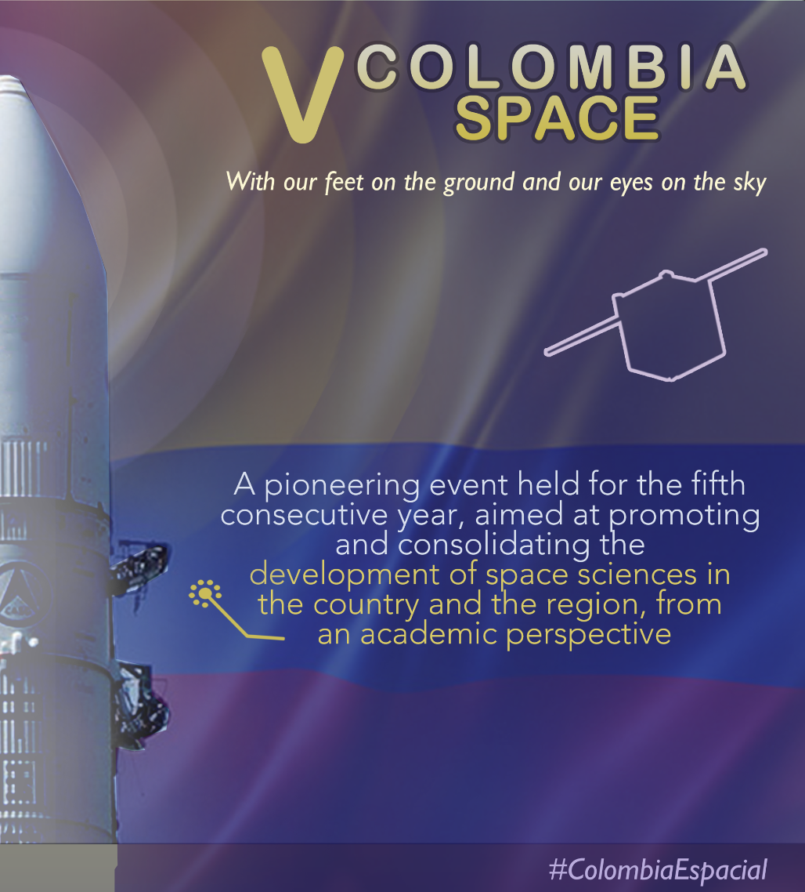

The 1st China-Latin American Professors
Academic Forum on Space Science
and V Colombia Space
Academic Forum on Space Science
and V Colombia Space
Focus on space technology and its application. Joining efforts for space development
Bogotá
December 2 and 3
December 2 and 3


Book your calendar!
We cordially invite you to participate in an unprecedented event that will unite two significant efforts in the field of space science and technology: The 1st China-Latin American Professors
Academic Forum on Space Science
and V Colombia Space, which will take place on December 2 and 3, 2024 (the first day at the Colombian Society of Engineers and the second day at the Bogotá Planetarium), with free admission for all attendees.
The main objective of this meeting is to promote international cooperation in space science and technology, with a special focus on academic and research collaboration between China and Latin America. Over the course of two days, experts, researchers, and students will gather to discuss and advance key topics that are shaping the future of space.
This event promises to be a unique opportunity to learn about the latest advancements in space technology applications and to explore new possibilities for collaboration between nations. Don’t miss the chance to be part of this forum, where space science and technology come together to create a global impact.
We look forward to having you as part of this historic event!
Supporting Institutions
Observatorio Astronómico Nacional de Colombia
Beihang University, China
Planetario de Bogotá
Sociedad Colombiana de Ingenieros
Ministerio de Ciencia Tecnología e Innovación
Embassy of China in Colombia
Corporación C-Caldas
Planet AI Space Group
Enciso Systems
Academia Colombiana de Ciencias Exactas, Fisicas y Naturales
Ministerio de Ciencia, Tecnología e Innovación
Academia Colombiana de Ciencias Económicas
LatitUD - Lab. Astronomía y TI Geoespacial
Universidad Distrital Francisco José de Caldas
Andean Regional Office of Astronomy for Development
Sociedad Latinoamericana en Percepción Remota y Sistemas de Información Espacial SELPER
Beihang University, China
Planetario de Bogotá
Sociedad Colombiana de Ingenieros
Ministerio de Ciencia Tecnología e Innovación
Embassy of China in Colombia
Corporación C-Caldas
Planet AI Space Group
Enciso Systems
Academia Colombiana de Ciencias Exactas, Fisicas y Naturales
Ministerio de Ciencia, Tecnología e Innovación
Academia Colombiana de Ciencias Económicas
LatitUD - Lab. Astronomía y TI Geoespacial
Universidad Distrital Francisco José de Caldas
Andean Regional Office of Astronomy for Development
Sociedad Latinoamericana en Percepción Remota y Sistemas de Información Espacial SELPER
INVITED SPEAKERS
Dr. YANG Dongkai
Professor, School of Electronic and Information Engineering, School of International Innovation Institute, Beihang University,China
Professor YANG earned his Doctoral degree in Information and Communication Engineering in 2000 and has been a full professor at Beihang University since 2010. Now he is the Deputy Chief Editor of the Journal of Global Positioning Systems and an editor for Radio Engineering. He also serves as the Chinese Coordinator for the China-Europe Joint Work Group on navigation satellite reflected signals, and as the Chief Scientist for satellite navigation at the Regional Centre for Space Science, Technology, and Education, which is affiliated with the United Nations.
He leads a research team focused on satellite navigation signal processing, its remote sensing applications, and the integration of communication, navigation, and sensing technologies. With over 20 years of experience in satellite navigation theory and technology, Professor YANG has pioneered the application of navigation signals in earth observation, including areas such as oceanography, meteorology, and agriculture.

Dr. DUAN Haibin
Professor, School of Automation Science and Electrical Engineering, Beihang University, China
He was awarded the National Science Fund for Distinguished Young Scholars of China in 2014 and is a recipient of several prestigious honours, including the Chang Jiang Scholars Program of China, the Scientific and Technological Innovation Leading Talent under the National High-Level Talents Special Support Plan ("Ten Thousand Plan"), the Top-Notch Young Talents Program, the Program for New Century Excellent Talents in University of China, and the Beijing NOVA Program.
His current research interests include multi-UAV swarm autonomous control, bio-inspired intelligence, and biological computer vision. He has authored or coauthored over 90 publications and serves as the Editor-in-Chief of Guidance, Navigation and Control, the Deputy Editor-in-Chief of Acta Automatica Sinica, and the Associate Editor of IEEE Transactions on Cybernetics, IEEE Transactions on Circuits and Systems I: Regular Papers, and IEEE Transactions on Circuits and Systems II: Express Briefs.

Dr. DIAO Xungang
Professor, School of Energy and Power Engineering, Beihang University, China
His academic and research journey includes prestigious institutions such as Lanzhou University, the Institute of Physical and Chemical Engineering of Nuclear Industry, Tsinghua University, the Brazilian Center for Physics Research (CBPF), Japan's RIKEN, the Royal Institute of Technology (KTH) in Sweden, and Tianjin University. Professor DIAO has authored over 210 academic papers, garnering 3,300 citations and H-index of 35. He has led over 40 scientific and technological research projects, holds 12 invention patents, and has received five awards for his contributions to research, education, and university physics teaching in English to both Chinese and international students.

Dr. SUN Liang
Associate Professor, School of Astronautics, Beihang University, China
He currently serves as the deputy director of the Department of Spacecraft & Launch Vehicle Technology, School of Astronautics and an expert in satellite technology of the Asia-Pacific Regional Center for Space Science and Technology Education (China) affiliated to the United Nations. He earned his bachelor's and master's degrees from Harbin Institute of Technology in 2005 and 2009 respectively, and he was a visiting scholar at Michigan State University, focusing on robotic control research. He is an editorial board member and reviewer of Acta Astronautica, IEEE Transactions on Aerospace and Electronic System and other prestigious journals.
Dr. Sun's research primarily revolves around spacecraft overall design, satellite structures and mechanisms, and spacecraft control. He has presided over projects such as the National Natural Science Foundation of China, published more than 40 academic papers, and served as a co-chair of conferences such as Asia-Pacific Space Technology and Science Conference and Asian Space Engineering Joint Seminar. As the executive deputy chief designer, he undertook the international cooperation project - APSCO SSS satellite, which was highlighted in the Chinese government white paper China Space activities 2016 and praised by China National Space Administration as "the landmark achievement of China aerospace leading space cooperation in the Asia-Pacific region". Additionally, his developed mechanism product has been successfully verified in orbit and applied to the Hunter CATCH project for X-ray polarimetry observation.
Dr. ZHANG Zhihui
Associate Professor, Deputy Director of the Department of International Relations at Beihang University, China.
He holds a Ph.D. and a Master's degree in Management Sciences from Beihang University.
He has over 15 years of work experience in university research and disciplinary development at Beihang University. Before joining the Department of International Relations in 2022, Dr. Zhang worked on the Organizing Committee for the Beijing 2022 Winter Olympics and Paralympics as Deputy Director of the Arrivals and Departures Division of the International Relations Department, and as Director of the Arrivals and Departures Information Division at the Arrivals and Departures Center.
His main research fields include: university research, strategic university management, higher education assessment, and university information construction.

Dr. HAO Jin-Xing (Gordon)
Vice Dean and a Hong-Kong-Scholar Professor at the School of Economics and Management, BeiHang University. He also services the Associate Editor of Electronic Commerce Research and Editorial Board of Journal of Travel Research and several international associations and conferences. He holds the position of the head of Research Centers for Information Technology Innovation and Application and New Generation Smart Supply Chain. He received his PhD in Information Systems from the City University of Hong Kong and Postdoctoral Fellowship from the Hong Kong Polytechnic University. Dr. HAO has extensive experiences on international cooperation and has well-established academic relationships with many renowned scholars from the United States, Europe, Singapore, and Hong Kong, China.
Dr. Hao’s research interests include knowledge and innovation management, data analytics and governance, and e-tourism and e-commerce. He works as the Principal Investigator for more than 20 research projects including National Science Foundation of China, Research Grants Council of Hong Kong, and others. Dr. Hao has published 80+ research articles in refereed journals and conferences. He has been awarded the outstanding research achievements by the Ministry of Education, and the outstanding research achievements by the Ministry of Industry and Information Technology.
Dr. MARIA FERNANDA González
María Fernanda is a serial entrepreneur and innovator. She has been creating technological Startups and business solutions since 2010. She has a Ph.D in Quantum Physics (University of Barcelona, Spain), a Master's in Numerical Methods (Polytechnic University of Cataluña, Spain), and an MBA from the IESE Business School, and she has undergraduate studies in Theoretical Physics, Civil Engineering and Physical Oceanography in Colombia. María Fernanda specializes in creating business solutions based on Big Data and Machine Learning for large corporations, improving their annual turnover between 5 and 7 percent. In 2013, she was invited by the United States and nominated by Spain to represent the country in its prestigious IVLP (International Visitor Leadership Program). During her professional career, she has received support from several governments through different grants, such as the Catalan Government, the Spanish Government, the American Government, the South Korean Government, and the Dutch Government. Since 2019, he has focused his career on the creation of artificial intelligence for the well-being of our planet. He founded Fregata Space, Planetai Space, and recently Planetai Nature Space, a carbon credit certifier NGO. They certify and monitor conservation projects, providing services to quantify the Natural Capital of our planet and the adverse effects of air pollution on the environment.

Dr. JENNY CAROLINA Robledo Asencio
Aeronautical engineer with a master's and Ph.D. in Space Engineering and Technologies. She works as a consultant in space systems engineering and as a systems engineer at Acosta-Aeroespace. She previously served as a propulsion systems engineer at the Argentine company Satellogic. She specializes in space propulsion and has experience in experimental testing of ion thrusters (electric propulsion) and computational simulation of monopropellant thrusters (chemical propulsion). She has experience in coordinating AIT activities, research and development of small satellites, and New Space technologies. She participated in the coordination of Assembly, Integration, and Testing (AIT) at the National Institute for Space Research (INPE) and was part of the organizing committee for the first Latin American Small Satellite Contest.
Dr. IVAN Luna
Electronic Engineer and specialist in Applied Mathematics, Director of Science at the Ministry of Science, Technology, and Innovation.
After serving as a professor and researcher at Sergio Arboleda University since 2002, I became the technical director of the "Libertad 1" mission. This mission marked the launch of Colombia's first satellite into space in 2007. I co-founded Sequoia Space in 2007, a company dedicated to aerospace development, where I also served as the director of the UAPSAT 1 satellite mission for Peru.
I have been an active member of the aerospace development and entrepreneurship community, serving on the board of the Latin American Entrepreneurship Association and as the director of the Aeronautics and Aerospace Commission of the Colombian Engineers Association (ACIEM). In these fields, I have worked as a consultant on the structuring of technological development projects. I also served as Director of Special Projects for the Vice Presidency of the Republic and advisor to the Digital Transformation Group of the Presidency of the Republic.
Dr. SANDRA I. Ramírez Jiménez
Dr. Ramírez Jiménez is a distinguished scientist in the field of astrobiology and planetary environment simulation. With a solid background in chemistry, she completed her undergraduate studies at the Autonomous University of the State of Mexico and pursued her graduate studies at the National Autonomous University of Mexico (UNAM) and the University of Paris XII, where she earned doctorates in analytical chemistry and environmental contamination chemistry and physics. Her interest in astrobiology emerged while collaborating with Dr. Rafael Navarro González on studies of Titan's atmosphere, leading her to co-found the Mexican Society of Astrobiology (Soma) to promote the development of this discipline in Mexico.
As a research professor at the Autonomous University of the State of Morelos (UAEM) since 2002, Dr. Ramírez Jiménez founded the Planetary Atmospheres Simulation Laboratory, where she leads projects on atmospheric simulation and studies of extremophile bacteria under conditions similar to those on other planets. She is also a dedicated educator, teaching university-level courses in chemistry and astrobiology. Her work, bridging basic science and space exploration, makes her a key figure in astrobiology in Mexico, inspiring new generations of students and advancing frontier research.
Dr. MARIO ARMANDO Higuera Garzón
Associate Professor at the National Astronomical Observatory of Colombia since 1996. He earned his degree in Physics and a Master's degree from the University of Los Andes, Mérida, Venezuela, and his PhD from the Department of Physics at the National University of Colombia. His research focuses on the relationship between nuclear stellar activity and the activity of Active Galactic Nuclei. He leads the research group "AGNs, Numerical Analysis, and Simulation," as well as the National Astronomical Observatory's Heritage group. He also coordinates the research teams "Design and Implementation of Mobile Applications," which produced the iUN and LARIM2016 apps, and "SAGAN in AGNs." He was the director of the National Astronomical Observatory from 2002 to 2006. From 2014 to 2016, he coordinated the committee on informatics, communications, and audiovisual media at the Faculty of Sciences at the National University of Colombia. Since 2018, he has been the director of the National Astronomical Observatory. He currently represents the Colombian astronomical community, AstroCO, before the International Astronomical Union.
Past Editions
Since 2020, four successful editions of the event "Colombia Espacial" have been held annually, receiving great recognition from the scientific and academic community. Throughout these editions, the event has played a key role in promoting space research topics and strengthening connections with the Colombian researcher diaspora, enabling collaboration with renowned international scientists and experts.
Each year, Colombia Espacial has served as a key platform for academic, governmental, and private sector entities to come together in the effort to advance space science and technology in the country. This event has opened doors to new collaborations, strengthening research in strategic areas and facilitating access to global knowledge networks.
If you wish to revisit the lectures from previous editions and learn more about the achievements made, we invite you to visit the YouTube channel of the National Astronomical Observatory of Colombia, where you will find a full selection of presentations from the latest editions of Colombia Espacial.
Program
Under
Construcción
The program for our event is currently being developed and will be available soon. We are working to offer a comprehensive agenda that brings together prominent national and international experts, researchers, and students to discuss the latest trends and advancements in space science and technology.
We appreciate your patience and assure you that all program details will be accessible shortly. Stay tuned for more updates, and feel free to visit us again for further information. We are excited to share this great event with you very soon!
Contacto
Find us here